<title>Guion de sustentación Café Luna</title>
<meta name="claude:viewport-fit-sides" content="cover">
<link rel="stylesheet" href="https://fonts.googleapis.com/css2?family=Barlow+Condensed:wght@600;700&family=Barlow+Semi+Condensed:wght@400;600&family=B612+Mono&display=swap">
<style>
/* Tablero de sala de control: lámina a la izquierda, lo que digo a la derecha; índice fijo arriba. */
:root {
  --bg: #dcdeda;
  --fg: #1c2023;
  --muted: #545b5c;
  --line: #b7bbb6;
  --panel: #eef0ec;
  --plate: #1c2023;
  --plate-fg: #f2f3ef;
  --accent: #8a5a00;
  --opc: #6c7273;
  --display: "Barlow Condensed", "Arial Narrow", sans-serif;
  --body: "Barlow Semi Condensed", system-ui, sans-serif;
  --mono: "B612 Mono", ui-monospace, monospace;
}
@media (prefers-color-scheme: dark) {
  :root:not([data-theme="light"]) { --bg: #171a1c; --fg: #e9ebe7; --muted: #a3aaaa; --line: #383e40; --panel: #212528; --plate: #2b3033; --plate-fg: #f2f3ef; --accent: #f5b400; --opc: #8f9697; color-scheme: dark; }
}
:root[data-theme="dark"] { --bg: #171a1c; --fg: #e9ebe7; --muted: #a3aaaa; --line: #383e40; --panel: #212528; --plate: #2b3033; --plate-fg: #f2f3ef; --accent: #f5b400; --opc: #8f9697; color-scheme: dark; }
body::before { content: ""; position: fixed; inset: 0 0 auto; height: env(safe-area-inset-top, 0px); z-index: 10; background: var(--plate); }
body { background: var(--bg); color: var(--fg); font: 18px/1.5 var(--body); }
nav.indice { position: sticky; top: env(safe-area-inset-top, 0px); z-index: 5; background: var(--plate); padding-block: 8px; padding-left: max(16px, env(safe-area-inset-left, 0px)); padding-right: max(16px, env(safe-area-inset-right, 0px)); display: flex; flex-wrap: wrap; gap: 4px 18px; }
nav.indice a { color: var(--plate-fg); font: 600 0.95rem var(--display); letter-spacing: 0.06em; text-transform: uppercase; text-decoration: none; }
nav.indice a:hover, nav.indice a:focus-visible { text-decoration: underline; }
main { max-width: 76rem; margin: 0 auto; padding-block: 28px 72px; padding-left: max(16px, env(safe-area-inset-left, 0px)); padding-right: max(16px, env(safe-area-inset-right, 0px)); }
h1 { font: 700 2.6rem/1.05 var(--display); text-transform: uppercase; letter-spacing: 0.02em; margin: 0; text-wrap: balance; }
.sub { color: var(--muted); margin: 6px 0 0; }
h2 { font: 700 1.7rem/1.1 var(--display); text-transform: uppercase; letter-spacing: 0.04em; background: var(--plate); color: var(--plate-fg); display: inline-block; padding: 6px 14px; margin: 44px 0 14px; scroll-margin-top: 56px; text-wrap: balance; }
h3 { font: 700 1.2rem/1.2 var(--display); letter-spacing: 0.03em; text-transform: uppercase; margin: 0; }
section.level2 > p, section.level2 > ul, section.level2 > ol, section.level3:not(:has(img)) > p { max-width: 46rem; }
section.level3 { margin-top: 28px; }
section.level3:has(img) { display: grid; grid-template-columns: minmax(0, 1.35fr) minmax(0, 1fr); gap: 4px 24px; align-content: start; padding-top: 16px; margin-top: 16px; border-top: 1px solid var(--line); }
section.level3:has(img) > * { grid-column: 2; margin: 0 0 8px; min-width: 0; }
section.level3:has(img) > h3 { grid-column: 1 / -1; }
section.level3:has(img) > p:has(img) { grid-column: 1; grid-row: 2 / span 12; margin: 0; }
section.level3 img { display: block; width: 100%; height: auto; border: 1px solid var(--line); cursor: zoom-in; }
section.level3 img:focus-visible, #cerrar-foto:focus-visible { outline: 3px solid var(--accent); outline-offset: 2px; }
#foto { padding: 0; border: 0; background: transparent; max-width: none; max-height: none; width: 100%; height: 100%; }
#foto::backdrop { background: rgba(10, 12, 13, 0.92); }
#foto[open] { display: flex; align-items: center; justify-content: center; cursor: zoom-out; }
#foto img { display: block; max-width: 98vw; max-height: 96vh; width: auto; height: auto; }
#cerrar-foto { position: fixed; top: calc(12px + env(safe-area-inset-top, 0px)); right: calc(12px + env(safe-area-inset-right, 0px)); font: 600 1rem var(--display); letter-spacing: 0.06em; text-transform: uppercase; color: var(--plate-fg); background: var(--plate); border: 1px solid var(--plate-fg); padding: 8px 14px; cursor: pointer; }
section.level3:has(img) > p:nth-of-type(1), section.level3:has(img) > p:nth-of-type(2) { font: 0.8rem/1.5 var(--mono); color: var(--muted); margin-bottom: 2px; }
.opc { color: var(--opc); }
em { color: var(--accent); font-style: normal; font-weight: 600; }
code { font: 0.85em var(--mono); background: var(--panel); padding: 0 4px; border: 1px solid var(--line); }
a { color: inherit; }
p { margin: 0 0 12px; }
ul, ol { padding-left: 1.3rem; }
@media (max-width: 760px) {
  body { font-size: 17px; }
  h1 { font-size: 2.1rem; }
  section.level3:has(img) { display: block; }
  section.level3:has(img) > p:has(img) { margin: 8px 0 12px; }
}
</style>
<dialog id="foto" aria-label="Lámina en grande">
  <button id="cerrar-foto" type="button">Cerrar</button>
  
</dialog>
<script>
document.addEventListener('DOMContentLoaded', () => {
  const foto = document.getElementById('foto')
  const grande = document.getElementById('foto-img')
  const abrir = img => {
    grande.src = img.src
    grande.alt = img.alt
    foto.showModal()
  }
  foto.addEventListener('click', () => foto.close())
  document.querySelectorAll('section.level3 img').forEach(img => {
    img.tabIndex = 0
    img.setAttribute('role', 'button')
    img.setAttribute('aria-label', img.alt + ', ver en grande')
    img.addEventListener('click', () => abrir(img))
    img.addEventListener('keydown', e => {
      if (e.key === 'Enter' || e.key === ' ') { e.preventDefault(); abrir(img) }
    })
  })
})
</script>
<nav class="indice" aria-label="Partes del guion">
  <a href="#lo-que-pide-el-profe">Lo que pide</a>
  <a href="#cómo-manejar-el-tablero">Tablero</a>
  <a href="#parte-1-los-10-minutos">10 minutos</a>
  <a href="#parte-2-las-2-preguntas">2 preguntas</a>
  <a href="#parte-3-si-trae-una-restricción-nueva">Restricción</a>
  <a href="#cómo-me-preparo">Preparación</a>
</nav>
<main>
<h1>Guion de sustentación: Digital Café Luna</h1>
<p class="sub">Defensa individual · miércoles 4 de noviembre de 2026, virtual · 10 minutos y 2 preguntas</p>
<p>Sergio Alfredo Junca Valero · ST1611 Computación en Nube. Sustento
con este tablero: <a
href="https://sjunka.github.io/digital-cafe-luna/?escena=problema&amp;paso=1"
class="uri">https://sjunka.github.io/digital-cafe-luna/?escena=problema&amp;paso=1</a></p>
<section id="lo-que-pide-el-profe" class="level2">
<h2>Lo que pide el profe</h2>
<p>“El Brief muestra qué decidiste. La defensa demuestra que entiendes
por qué lo decidiste.” (correo del 26 de octubre)</p>
<p>Para cada decisión debo poder decir 6 cosas:</p>
<ol type="1">
<li>Qué decidí.</li>
<li>Qué restricción lo justificó.</li>
<li>Qué problema resuelve.</li>
<li>Qué sacrifico: el trade-off.</li>
<li>Qué riesgo permanece.</li>
<li>Cómo demostraría que funciona.</li>
</ol>
<p><strong>La cadena:</strong> restricción → decisión → mecanismo →
consecuencia → trade-off. La guía agrega evidencia y alternativa.</p>
<p><strong>Rúbrica de la defensa (20 puntos):</strong> dominio de las
decisiones 5, razonamiento técnico 5, trade-offs, riesgos y adaptación
6, validación y evidencia 4.</p>
<p><strong>No respondo:</strong> “Usé Auto Scaling porque mejora la
escalabilidad.” “Porque hoy todo es Kubernetes.” “Por portabilidad”, sin
decir qué restricción lo pide.</p>
<p><strong>Sí respondo (ejemplo del correo):</strong> “La demanda es
variable, así que no conviene mantener capacidad fija para el pico. Por
eso uso capacidad que escala, y la infraestructura se ajusta a la
demanda. Reduzco la capacidad ociosa, pero tengo que vigilar cómo
escala.”</p>
<p><strong>Lo que dijo en la clase del 28 de octubre:</strong></p>
<ul>
<li>Pide cifras: “lo hizo, lo probó”. Qué decidí, por qué, qué valor
entregó y cuánto costó.</li>
<li>No evalúa el servicio elegido. Evalúa la justificación.</li>
<li>Buena respuesta suya: “dos instancias en dos AZ, sin multirregión
aunque sé que se puede”.</li>
<li>Puede preguntar por cualquier pieza del diagrama. Lo que nombro
tiene que estar en el diagrama.</li>
<li>Me llama con cámara abierta y todos escuchan.</li>
</ul>
<p><strong>Si no sé algo:</strong> “No lo medí. Lo que sé es ___, y lo
comprobaría con ___.”</p>
</section>
<section id="cómo-manejar-el-tablero" class="level2">
<h2>Cómo manejar el tablero</h2>
<ol type="1">
<li>En Chrome abro el enlace de arriba, con
<code>?escena=problema&amp;paso=1</code>. Así abre quieto en el paso
1.</li>
<li>Comparto la ventana de Chrome en Teams y pulso <code>F</code> para
pantalla completa y <code>T</code> para el reloj.</li>
<li>Avanzo <strong>solo con <code>→</code></strong>. Pasa de un paso al
siguiente y de una escena a la otra.</li>
<li>Antes de la lámina 42 pulso <code>Esc</code> para salir de pantalla
completa y bajo con la rueda.</li>
</ol>
<p><strong>Cuidado:</strong> las teclas <code>1</code> a <code>7</code>
y abrir el sitio sin el enlace hacen que la escena corra sola mientras
hablo. Si pasa, <code>Espacio</code> la detiene. Para una pregunta sí
uso <code>1</code> a <code>7</code>, y enseguida
<code>Espacio</code>.</p>
<p>Las demos de <code>/demos/</code> son para estudiar. No las abro
mientras comparto.</p>
</section>
<section id="parte-1-los-10-minutos" class="level2">
<h2>Parte 1: los 10 minutos</h2>
<p>Texto en gris: lo salto si voy tarde. Tiempos a 150 palabras por
minuto, sin pausas.</p>
<section id="el-problema-paso-1-de-6" class="level3">
<h3>01 · El problema · paso 1 de 6</h3>
<p><strong>Tiempo:</strong> 20 s (23 s con lo opcional)</p>
<p><strong>Clic:</strong> ya está abierto · caso</p>
<p>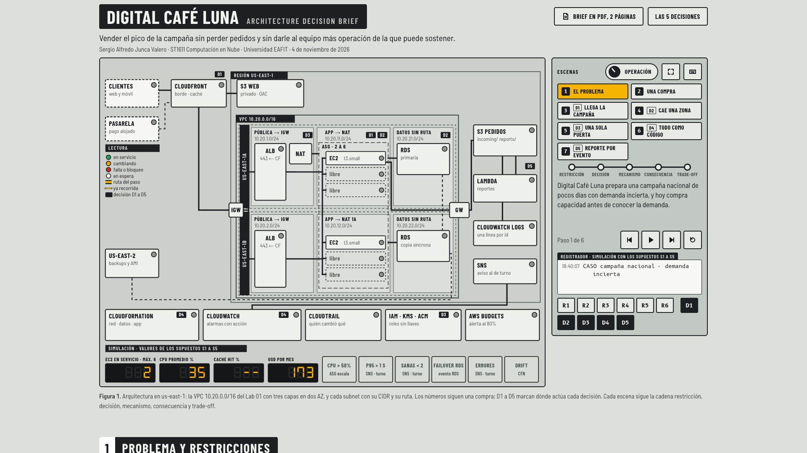</p>
<p>Buenas noches, profe. Le presento mi Brief de Digital Café Luna. Esta
es la figura 1 del Brief, animada. Los medidores son una simulación con
mis supuestos, no medidas reales.</p>
<p>Café Luna va a lanzar una campaña nacional de pocos días y no sabe
cuánta gente va a llegar. <span class="opc">Hoy compra capacidad antes
de conocer la demanda.</span></p>
</section>
<section id="el-problema-paso-2-de-6" class="level3">
<h3>02 · El problema · paso 2 de 6</h3>
<p><strong>Tiempo:</strong> 6 s</p>
<p><strong>Clic:</strong> <code>→</code> · R1</p>
<p>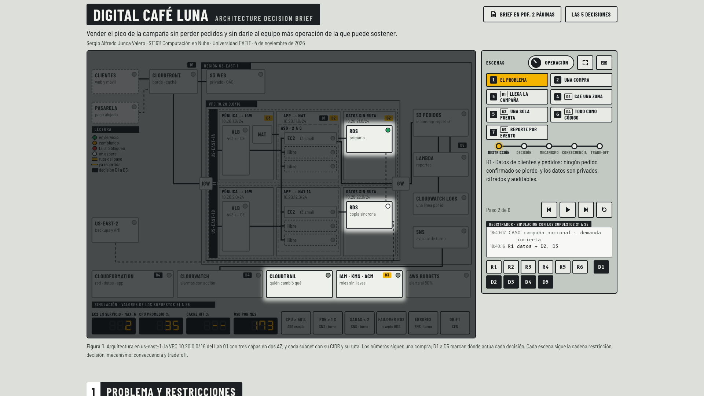</p>
<p>Seis condiciones cambian la arquitectura. Primera: no puedo perder
pedidos ni exponer datos de clientes.</p>
</section>
<section id="el-problema-paso-3-de-6" class="level3">
<h3>03 · El problema · paso 3 de 6</h3>
<p><strong>Tiempo:</strong> 2 s</p>
<p><strong>Clic:</strong> <code>→</code> · R2</p>
<p>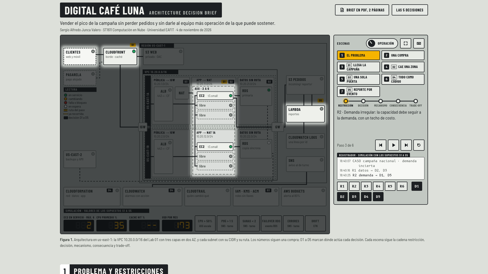</p>
<p>Segunda: la demanda sube y baja.</p>
</section>
<section id="el-problema-paso-4-de-6" class="level3">
<h3>04 · El problema · paso 4 de 6</h3>
<p><strong>Tiempo:</strong> 2 s</p>
<p><strong>Clic:</strong> <code>→</code> · R3</p>
<p>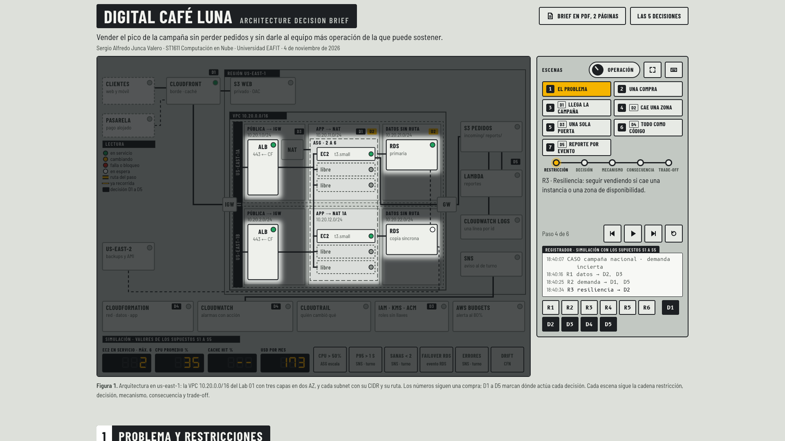</p>
<p>Tercera: seguir vendiendo si algo falla.</p>
</section>
<section id="el-problema-paso-5-de-6" class="level3">
<h3>05 · El problema · paso 5 de 6</h3>
<p><strong>Tiempo:</strong> 3 s</p>
<p><strong>Clic:</strong> <code>→</code> · R4 y R5</p>
<p>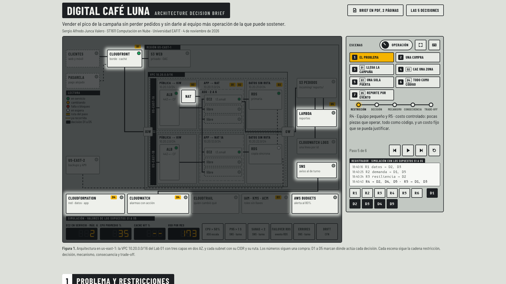</p>
<p>Cuarta y quinta: equipo pequeño y costo controlado.</p>
</section>
<section id="el-problema-paso-6-de-6" class="level3">
<h3>06 · El problema · paso 6 de 6</h3>
<p><strong>Tiempo:</strong> 21 s</p>
<p><strong>Clic:</strong> <code>→</code> · R6 y prioridad</p>
<p>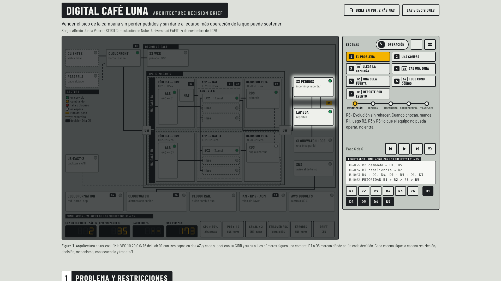</p>
<p>Sexta: crecer sin rehacer. Si chocan, manda pedidos y datos, luego
demanda, resiliencia y costo. Lo que el equipo no pueda operar, no
entra.</p>
<p>Mis supuestos: 30.000 pedidos al mes, unos 1.000 al día. Campaña de 3
a 5 días con 10 veces el tráfico. Unos 175 dólares al mes, 300 con
campaña.</p>
</section>
<section id="una-compra-paso-1-de-5" class="level3">
<h3>07 · Una compra · paso 1 de 5</h3>
<p><strong>Tiempo:</strong> 11 s</p>
<p><strong>Clic:</strong> <code>→</code> · qué se comunica con qué</p>
<p>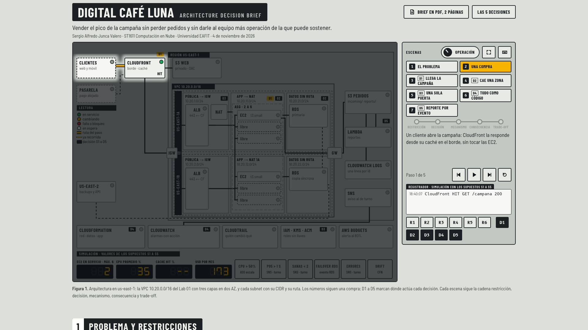</p>
<p>Sigo una compra para mostrar qué se comunica con qué. El cliente abre
la campaña y la página sale de la caché de CloudFront, sin tocar los
servidores.</p>
</section>
<section id="una-compra-paso-2-de-5" class="level3">
<h3>08 · Una compra · paso 2 de 5</h3>
<p><strong>Tiempo:</strong> 6 s</p>
<p><strong>Clic:</strong> <code>→</code></p>
<p>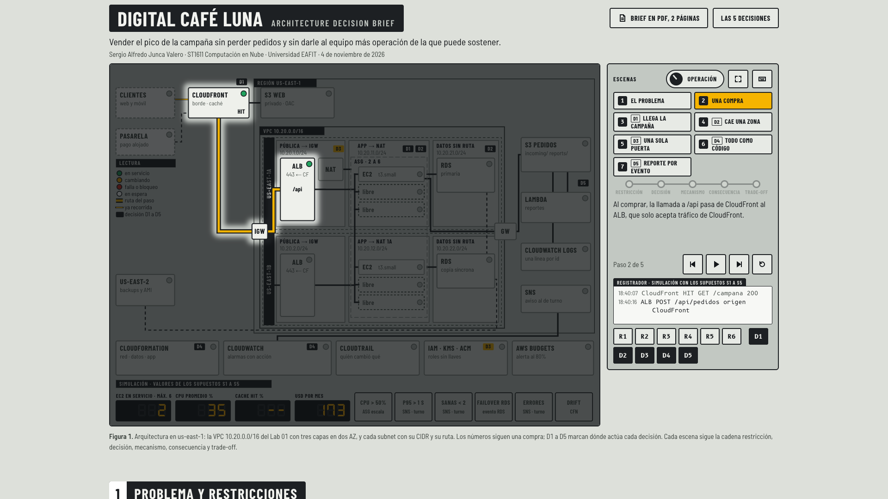</p>
<p>Al comprar, la petición pasa de CloudFront al balanceador, que solo
acepta tráfico de CloudFront.</p>
</section>
<section id="una-compra-paso-3-de-5" class="level3">
<h3>09 · Una compra · paso 3 de 5</h3>
<p><strong>Tiempo:</strong> 10 s</p>
<p><strong>Clic:</strong> <code>→</code></p>
<p>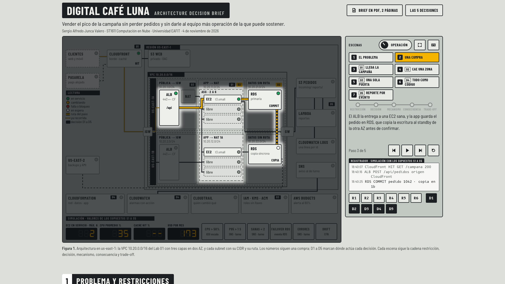</p>
<p>El balanceador la entrega a una instancia sana. La aplicación guarda
el pedido en la base, que lo copia a la otra zona antes de
confirmar.</p>
</section>
<section id="una-compra-paso-4-de-5" class="level3">
<h3>10 · Una compra · paso 4 de 5</h3>
<p><strong>Tiempo:</strong> 8 s</p>
<p><strong>Clic:</strong> <code>→</code></p>
<p>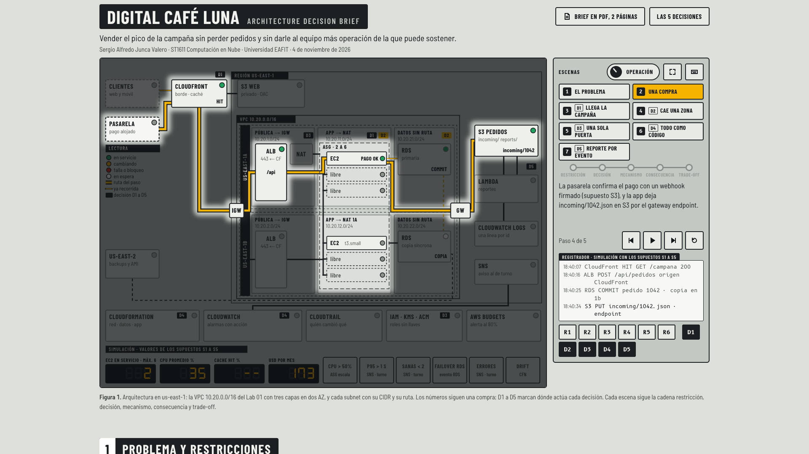</p>
<p>La pasarela confirma el pago con un webhook firmado, y la aplicación
deja un archivo del pedido en S3.</p>
</section>
<section id="una-compra-paso-5-de-5" class="level3">
<h3>11 · Una compra · paso 5 de 5</h3>
<p><strong>Tiempo:</strong> 14 s</p>
<p><strong>Clic:</strong> <code>→</code> · dónde vive el estado</p>
<p>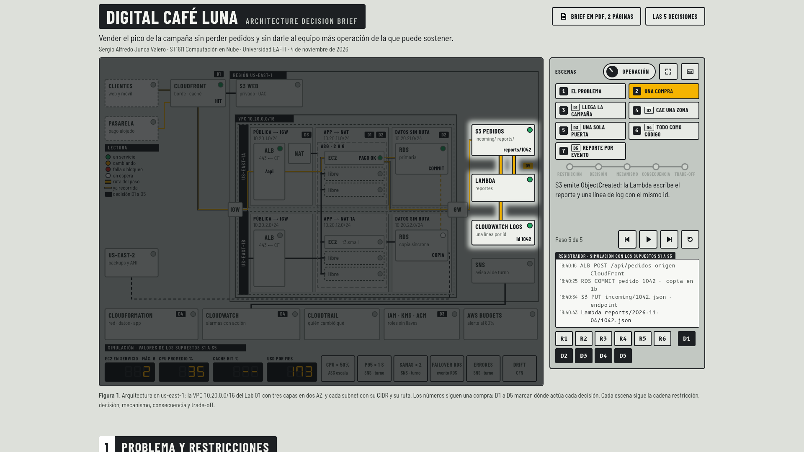</p>
<p>Ese archivo dispara una Lambda que arma el reporte.</p>
<p>El estado no vive en las instancias: sesión en cookie firmada,
pedidos en la base, archivos en S3. Por eso puedo perder una instancia
sin perder nada.</p>
</section>
<section id="d1-llega-la-campaña-paso-1-de-6" class="level3">
<h3>12 · D1 Llega la campaña · paso 1 de 6</h3>
<p><strong>Tiempo:</strong> 9 s</p>
<p><strong>Clic:</strong> <code>→</code> · restricción</p>
<p>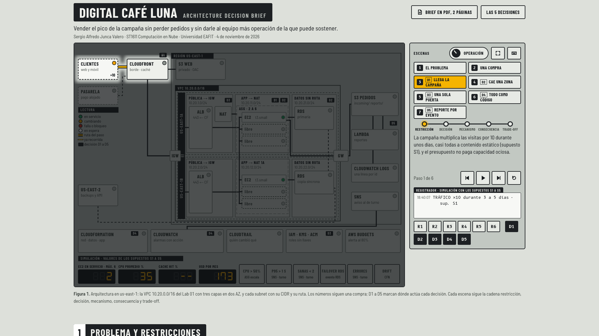</p>
<p>Primera decisión. La restricción: el pico dura pocos días, no sé de
qué tamaño será y el presupuesto no paga capacidad ociosa.</p>
</section>
<section id="d1-llega-la-campaña-paso-2-de-6" class="level3">
<h3>13 · D1 Llega la campaña · paso 2 de 6</h3>
<p><strong>Tiempo:</strong> 5 s</p>
<p><strong>Clic:</strong> <code>→</code> · decisión</p>
<p>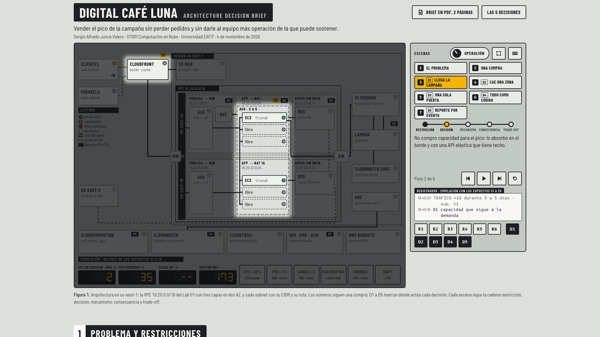</p>
<p>Por eso no compro capacidad para el pico. Lo absorbo en dos
niveles.</p>
</section>
<section id="d1-llega-la-campaña-paso-3-de-6" class="level3">
<h3>14 · D1 Llega la campaña · paso 3 de 6</h3>
<p><strong>Tiempo:</strong> 11 s</p>
<p><strong>Clic:</strong> <code>→</code> · mecanismo</p>
<p>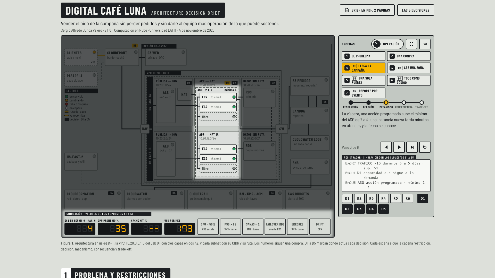</p>
<p>La víspera subo el mínimo de 2 a 4 instancias, porque escalar por
métrica toma minutos. En el Lab 06 la alarma necesitó 2 periodos de 5
minutos.</p>
</section>
<section id="d1-llega-la-campaña-paso-4-de-6" class="level3">
<h3>15 · D1 Llega la campaña · paso 4 de 6</h3>
<p><strong>Tiempo:</strong> 9 s</p>
<p><strong>Clic:</strong> <code>→</code> · mecanismo</p>
<p>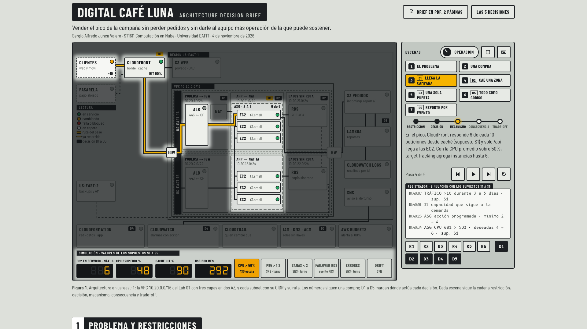</p>
<p>En el pico, CloudFront responde 9 de cada 10 peticiones. Si la CPU
promedio pasa de 50%, el grupo llega hasta 6 instancias.</p>
</section>
<section id="d1-llega-la-campaña-paso-5-de-6" class="level3">
<h3>16 · D1 Llega la campaña · paso 5 de 6</h3>
<p><strong>Tiempo:</strong> 7 s</p>
<p><strong>Clic:</strong> <code>→</code> · consecuencia</p>
<p>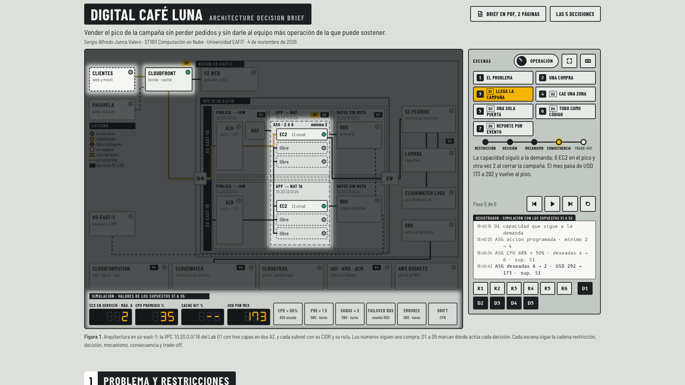</p>
<p>Al cerrar vuelve a 2. El mes pasa de 173 a 292 dólares y regresa al
piso.</p>
</section>
<section id="d1-llega-la-campaña-paso-6-de-6" class="level3">
<h3>17 · D1 Llega la campaña · paso 6 de 6</h3>
<p><strong>Tiempo:</strong> 23 s</p>
<p><strong>Clic:</strong> <code>→</code> · trade-off, alternativa,
riesgo y prueba</p>
<p>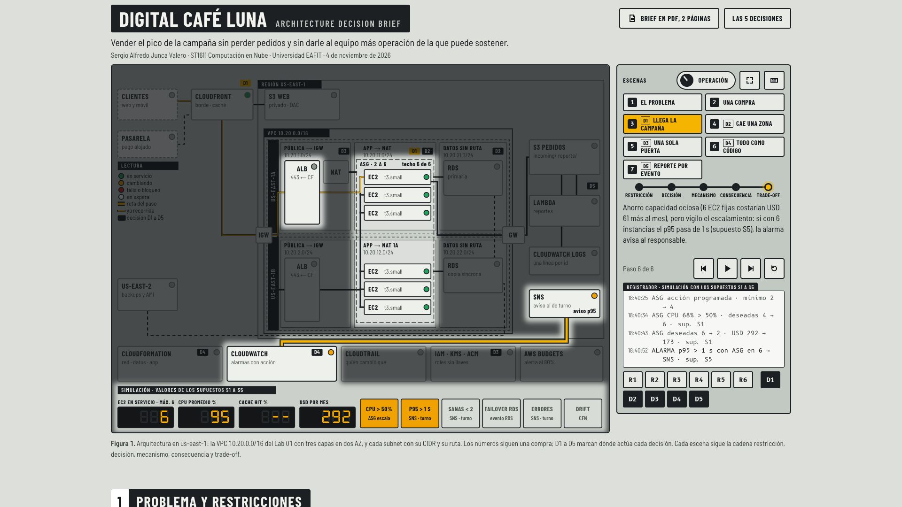</p>
<p>Gano: 6 instancias fijas costarían 61 dólares más al mes. Sacrifico:
sobre 6 instancias, la API se degrada. Descarté toda la API en Lambda,
porque exige rediseñar antes de la campaña.</p>
<p>Riesgo: un pico mayor que mi supuesto. Lo demuestro con una prueba de
carga a 10 veces lo normal: máximo 6 instancias y p95 bajo 1
segundo.</p>
</section>
<section id="d2-cae-una-zona-paso-1-de-6" class="level3">
<h3>18 · D2 Cae una zona · paso 1 de 6</h3>
<p><strong>Tiempo:</strong> 8 s</p>
<p><strong>Clic:</strong> <code>→</code> · restricción</p>
<p>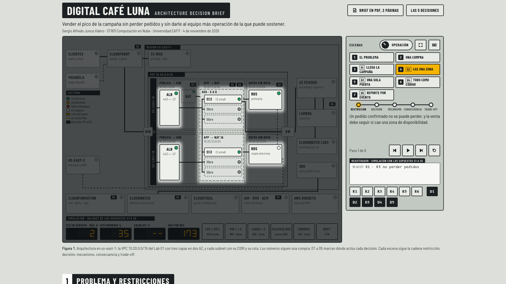</p>
<p>Segunda decisión. La restricción: un pedido confirmado no se puede
perder, y la venta sigue aunque caiga una zona.</p>
</section>
<section id="d2-cae-una-zona-paso-2-de-6" class="level3">
<h3>19 · D2 Cae una zona · paso 2 de 6</h3>
<p><strong>Tiempo:</strong> 7 s</p>
<p><strong>Clic:</strong> <code>→</code> · decisión</p>
<p></p>
<p>Por eso todo va en dos zonas, y el estado vive fuera de las
instancias, en RDS Multi-AZ.</p>
</section>
<section id="d2-cae-una-zona-paso-3-de-6" class="level3">
<h3>20 · D2 Cae una zona · paso 3 de 6</h3>
<p><strong>Tiempo:</strong> 7 s (12 s con lo opcional)</p>
<p><strong>Clic:</strong> <code>→</code> · mecanismo</p>
<p>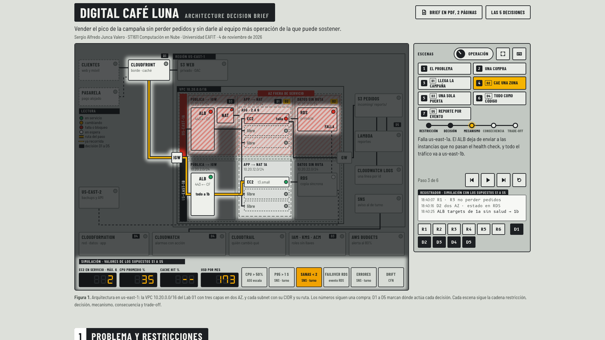</p>
<p>Si cae la zona 1a, el balanceador deja de enviarle tráfico y todo va
a la 1b. <span class="opc">Con health check de tipo ELB, el grupo
también reemplaza una aplicación colgada.</span></p>
</section>
<section id="d2-cae-una-zona-paso-4-de-6" class="level3">
<h3>21 · D2 Cae una zona · paso 4 de 6</h3>
<p><strong>Tiempo:</strong> 7 s</p>
<p><strong>Clic:</strong> <code>→</code> · mecanismo</p>
<p>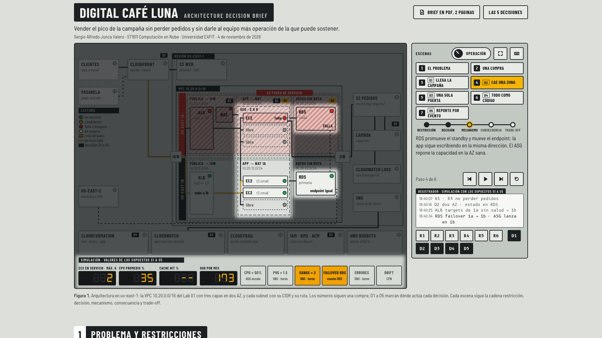</p>
<p>RDS promueve la copia síncrona y mueve el endpoint: la aplicación
sigue escribiendo en la misma dirección.</p>
</section>
<section id="d2-cae-una-zona-paso-5-de-6" class="level3">
<h3>22 · D2 Cae una zona · paso 5 de 6</h3>
<p><strong>Tiempo:</strong> 6 s</p>
<p><strong>Clic:</strong> <code>→</code> · consecuencia</p>
<p>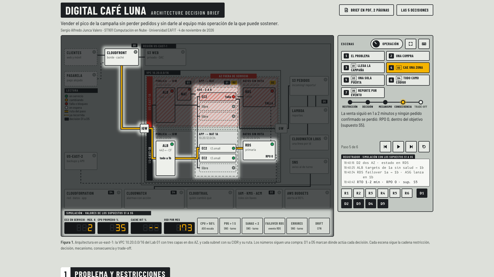</p>
<p>La venta vuelve en 1 a 2 minutos y no pierdo pedidos confirmados: RPO
0.</p>
</section>
<section id="d2-cae-una-zona-paso-6-de-6" class="level3">
<h3>23 · D2 Cae una zona · paso 6 de 6</h3>
<p><strong>Tiempo:</strong> 37 s</p>
<p><strong>Clic:</strong> <code>→</code> · trade-off, alternativa,
evidencia, riesgo y prueba</p>
<p>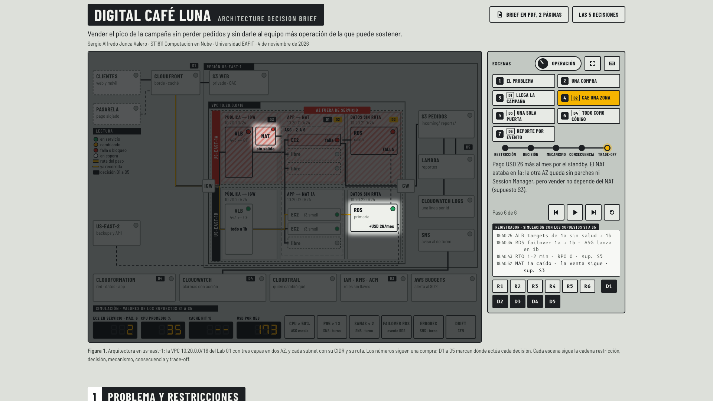</p>
<p>Pago 26 dólares más al mes que con una zona. Sé que se puede ir a
varias regiones. No lo hago porque casi duplica el costo fijo y el caso
no lo pide. Descarté PostgreSQL en EC2, porque el equipo operaría
réplica, backups y parches.</p>
<p>En el Lab 02 el balanceador sacó una instancia en 35 segundos y el
reemplazo atendió a los 2 minutos 40.</p>
<p>Riesgo: la base crece en vertical y puede ser el cuello de botella.
Lo demuestro con un failover durante la carga: los pedidos coinciden
antes y después.</p>
</section>
<section id="d3-una-sola-puerta-paso-1-de-6" class="level3">
<h3>24 · D3 Una sola puerta · paso 1 de 6</h3>
<p><strong>Tiempo:</strong> 6 s</p>
<p><strong>Clic:</strong> <code>→</code> · restricción</p>
<p>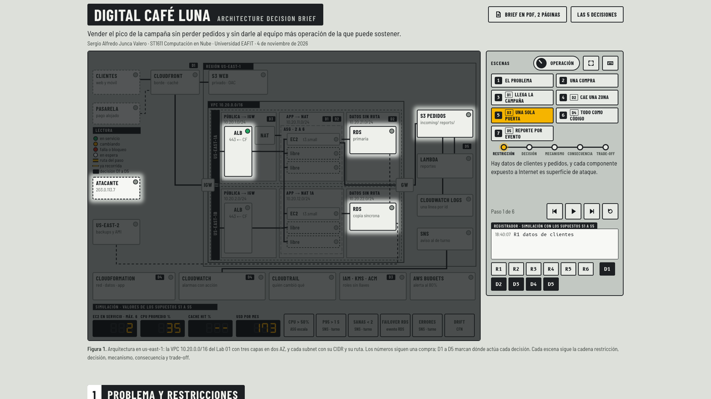</p>
<p>Tercera decisión. La restricción: hay datos de clientes, y lo
expuesto a Internet se puede atacar.</p>
</section>
<section id="d3-una-sola-puerta-paso-2-de-6" class="level3">
<h3>25 · D3 Una sola puerta · paso 2 de 6</h3>
<p><strong>Tiempo:</strong> 7 s</p>
<p><strong>Clic:</strong> <code>→</code> · decisión</p>
<p>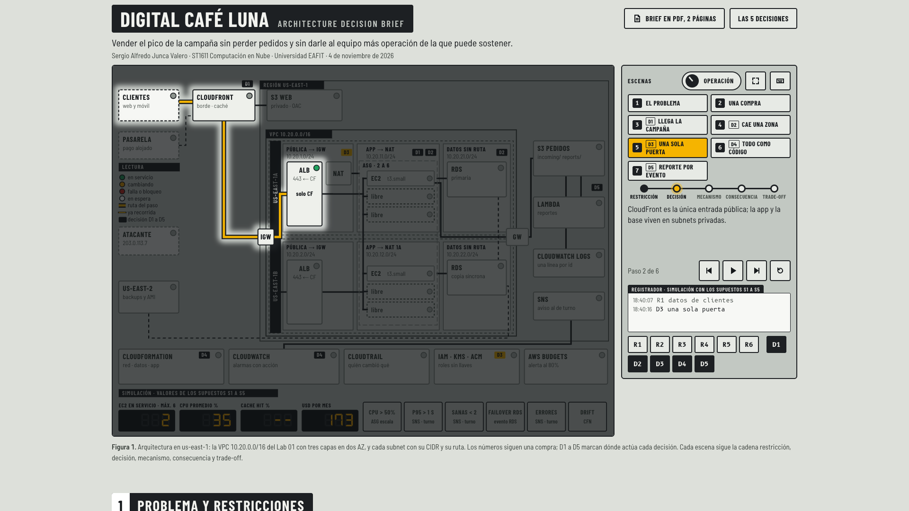</p>
<p>Por eso CloudFront es la única entrada pública, y la aplicación y la
base viven en subredes privadas.</p>
</section>
<section id="d3-una-sola-puerta-paso-3-de-6" class="level3">
<h3>26 · D3 Una sola puerta · paso 3 de 6</h3>
<p><strong>Tiempo:</strong> 8 s</p>
<p><strong>Clic:</strong> <code>→</code> · mecanismo</p>
<p>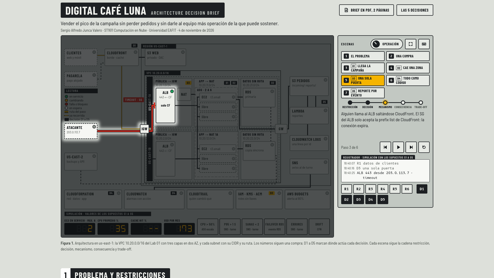</p>
<p>Cada grupo de seguridad acepta solo a la capa anterior. Si alguien
llama directo al balanceador, la conexión expira.</p>
</section>
<section id="d3-una-sola-puerta-paso-4-de-6" class="level3">
<h3>27 · D3 Una sola puerta · paso 4 de 6</h3>
<p><strong>Tiempo:</strong> 6 s</p>
<p><strong>Clic:</strong> <code>→</code> · mecanismo</p>
<p>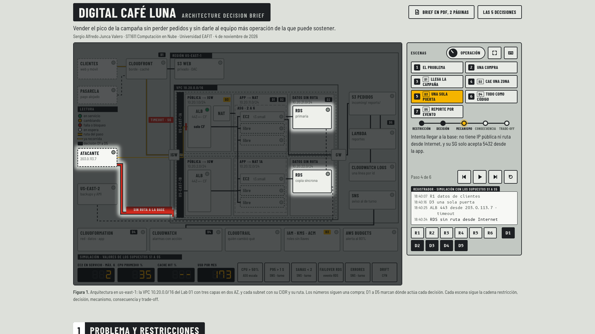</p>
<p>La base no tiene ruta desde Internet y solo acepta el puerto 5432
desde la aplicación.</p>
</section>
<section id="d3-una-sola-puerta-paso-5-de-6" class="level3">
<h3>28 · D3 Una sola puerta · paso 5 de 6</h3>
<p><strong>Tiempo:</strong> 10 s</p>
<p><strong>Clic:</strong> <code>→</code> · consecuencia</p>
<p>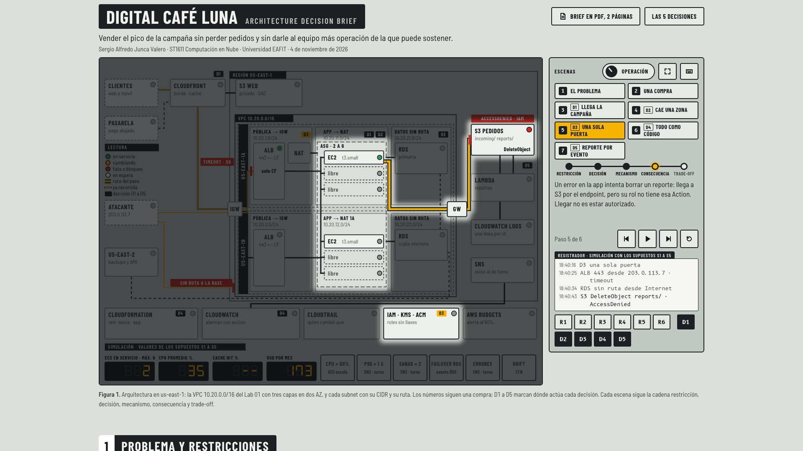</p>
<p>Llegar no es estar autorizado. Si un error de la aplicación intenta
borrar un reporte, llega a S3, pero su rol de IAM no lo permite.</p>
</section>
<section id="d3-una-sola-puerta-paso-6-de-6" class="level3">
<h3>29 · D3 Una sola puerta · paso 6 de 6</h3>
<p><strong>Tiempo:</strong> 25 s</p>
<p><strong>Clic:</strong> <code>→</code> · trade-off, alternativa,
evidencia, riesgo y prueba</p>
<p>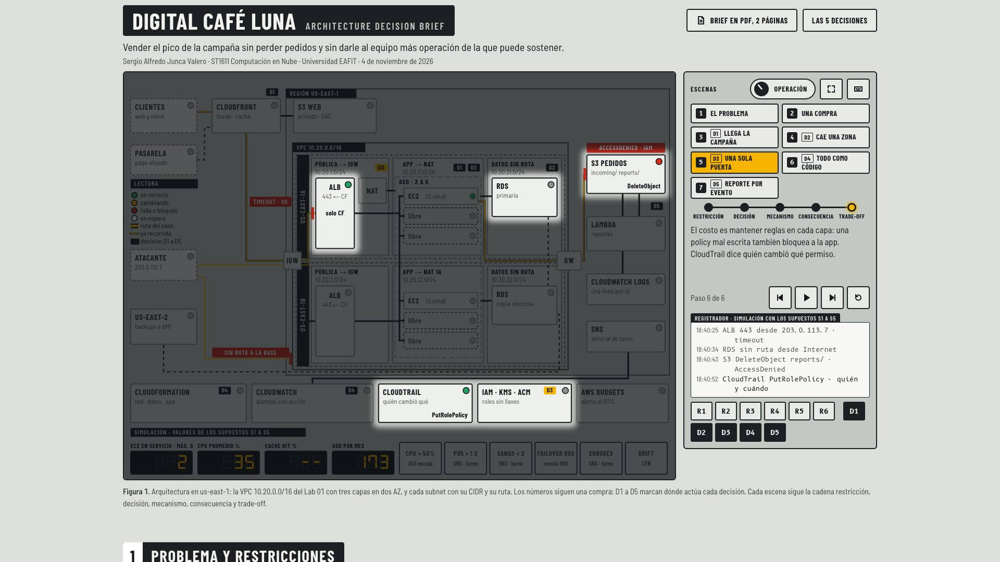</p>
<p>El costo es mantener más reglas. Descarté un NAT por zona: ahorro 37
dólares al mes, y vender no depende del NAT.</p>
<p>En los labs 04 y 05, sin la regla entre grupos hubo timeout, y con el
mismo rol leer pasó y escribir dio AccessDenied.</p>
<p>Riesgo: una política mal escrita. Lo demuestro llamando directo al
balanceador: timeout, y por CloudFront, 200.</p>
</section>
<section id="d4-todo-como-código-paso-1-de-6" class="level3">
<h3>30 · D4 Todo como código · paso 1 de 6</h3>
<p><strong>Tiempo:</strong> 9 s</p>
<p><strong>Clic:</strong> <code>→</code> · restricción</p>
<p>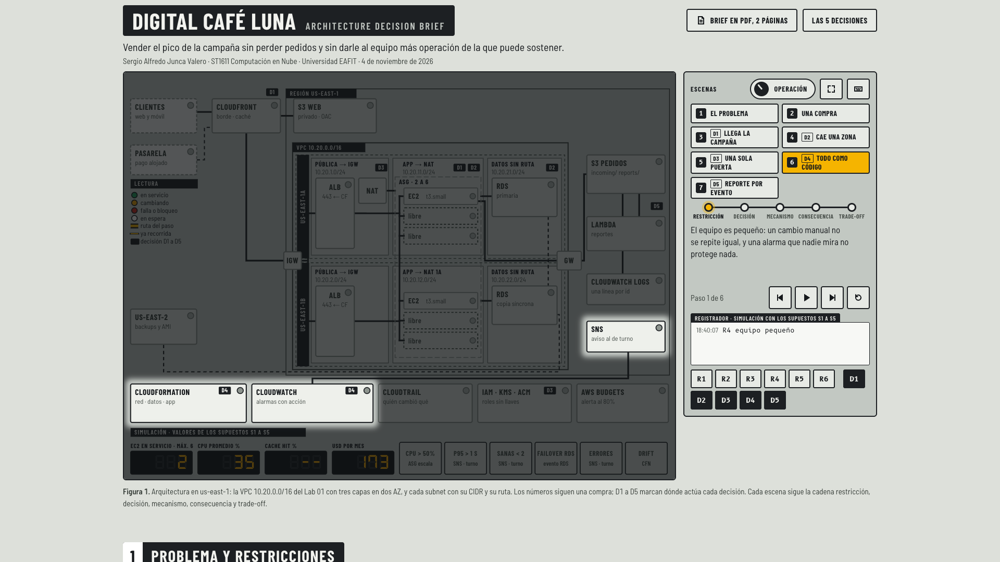</p>
<p>Cuarta decisión. La restricción: con un equipo pequeño, un cambio
manual no se repite igual, y una alarma que nadie mira no protege.</p>
</section>
<section id="d4-todo-como-código-paso-2-de-6" class="level3">
<h3>31 · D4 Todo como código · paso 2 de 6</h3>
<p><strong>Tiempo:</strong> 6 s</p>
<p><strong>Clic:</strong> <code>→</code> · decisión</p>
<p>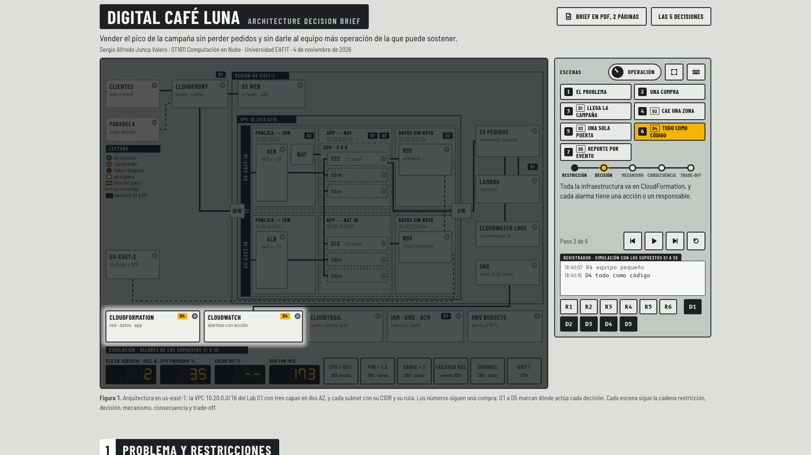</p>
<p>Por eso todo va en CloudFormation, y cada alarma tiene una acción o
un responsable.</p>
</section>
<section id="d4-todo-como-código-paso-3-de-6" class="level3">
<h3>32 · D4 Todo como código · paso 3 de 6</h3>
<p><strong>Tiempo:</strong> 7 s</p>
<p><strong>Clic:</strong> <code>→</code> · mecanismo</p>
<p>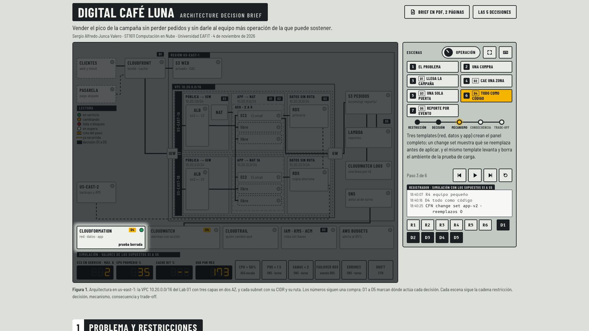</p>
<p>Son 3 plantillas: red, datos y aplicación. El change set muestra qué
se reemplaza antes de aplicar.</p>
</section>
<section id="d4-todo-como-código-paso-4-de-6" class="level3">
<h3>33 · D4 Todo como código · paso 4 de 6</h3>
<p><strong>Tiempo:</strong> 9 s</p>
<p><strong>Clic:</strong> <code>→</code> · mecanismo</p>
<p>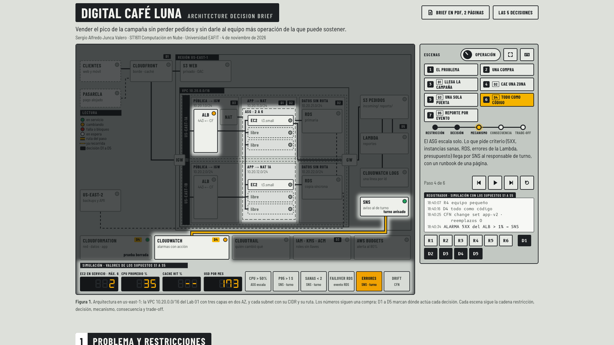</p>
<p>El grupo escala solo. Lo que pide criterio llega por SNS a la persona
de turno, con un procedimiento de una página.</p>
</section>
<section id="d4-todo-como-código-paso-5-de-6" class="level3">
<h3>34 · D4 Todo como código · paso 5 de 6</h3>
<p><strong>Tiempo:</strong> 3 s</p>
<p><strong>Clic:</strong> <code>→</code> · consecuencia</p>
<p>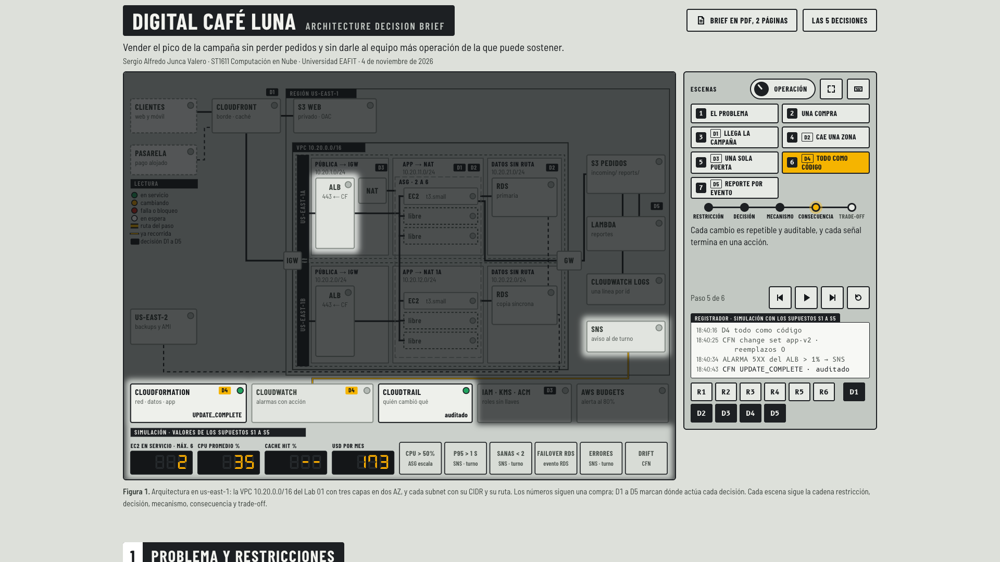</p>
<p>Cada cambio se puede repetir y auditar.</p>
</section>
<section id="d4-todo-como-código-paso-6-de-6" class="level3">
<h3>35 · D4 Todo como código · paso 6 de 6</h3>
<p><strong>Tiempo:</strong> 22 s</p>
<p><strong>Clic:</strong> <code>→</code> · trade-off, alternativa,
evidencia, riesgo y prueba</p>
<p>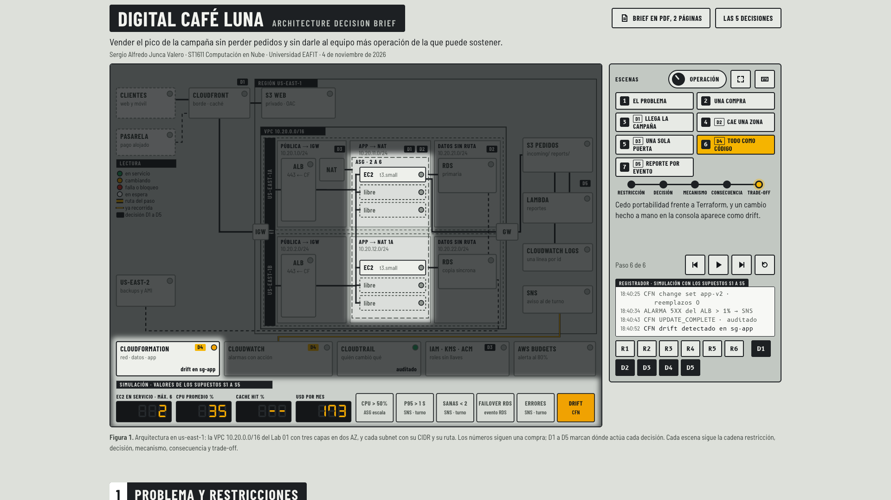</p>
<p>Cedo portabilidad. Descarté Terraform, porque custodiar el archivo de
estado no compensa con una sola nube.</p>
<p>En el Lab 06 la alarma llegó a ALARM, pero sin acciones no pasó nada.
Por eso ninguna queda sin dueño.</p>
<p>Riesgo: un cambio manual. Lo demuestro cambiando a mano un grupo de
seguridad: la detección de drift lo marca.</p>
</section>
<section id="d5-reporte-por-evento-paso-1-de-6" class="level3">
<h3>36 · D5 Reporte por evento · paso 1 de 6</h3>
<p><strong>Tiempo:</strong> 9 s</p>
<p><strong>Clic:</strong> <code>→</code> · restricción</p>
<p>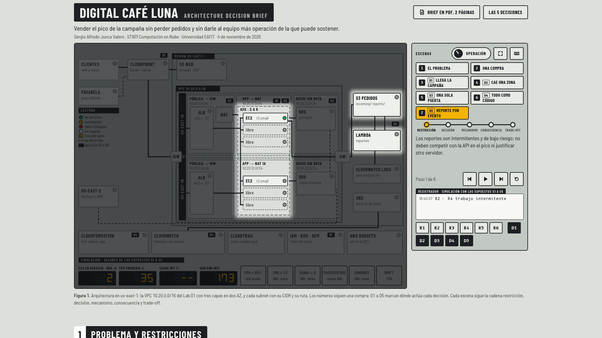</p>
<p>Quinta decisión. La restricción: los reportes son intermitentes y de
bajo riesgo, y no deben competir con la API en el pico.</p>
</section>
<section id="d5-reporte-por-evento-paso-2-de-6" class="level3">
<h3>37 · D5 Reporte por evento · paso 2 de 6</h3>
<p><strong>Tiempo:</strong> 8 s</p>
<p><strong>Clic:</strong> <code>→</code> · decisión y modelo de
ejecución</p>
<p>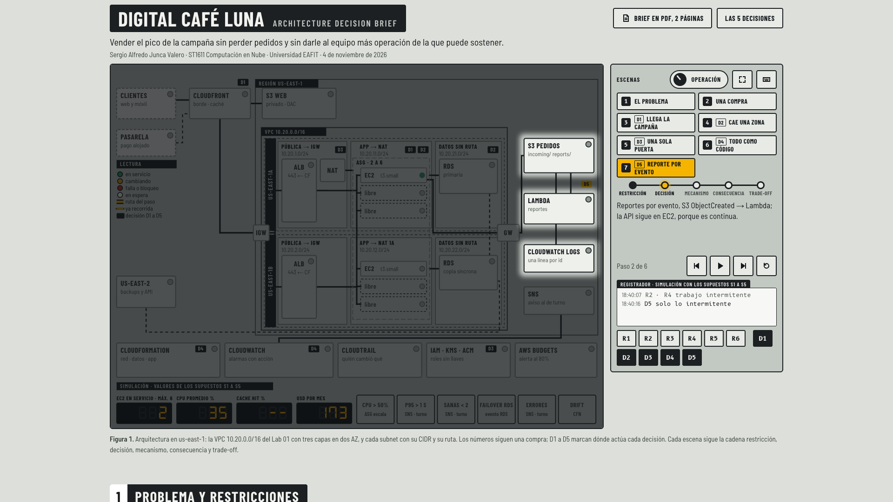</p>
<p>Por eso solo los reportes van por evento a una Lambda. La API es
continua y sigue en EC2.</p>
</section>
<section id="d5-reporte-por-evento-paso-3-de-6" class="level3">
<h3>38 · D5 Reporte por evento · paso 3 de 6</h3>
<p><strong>Tiempo:</strong> 5 s</p>
<p><strong>Clic:</strong> <code>→</code> · mecanismo</p>
<p>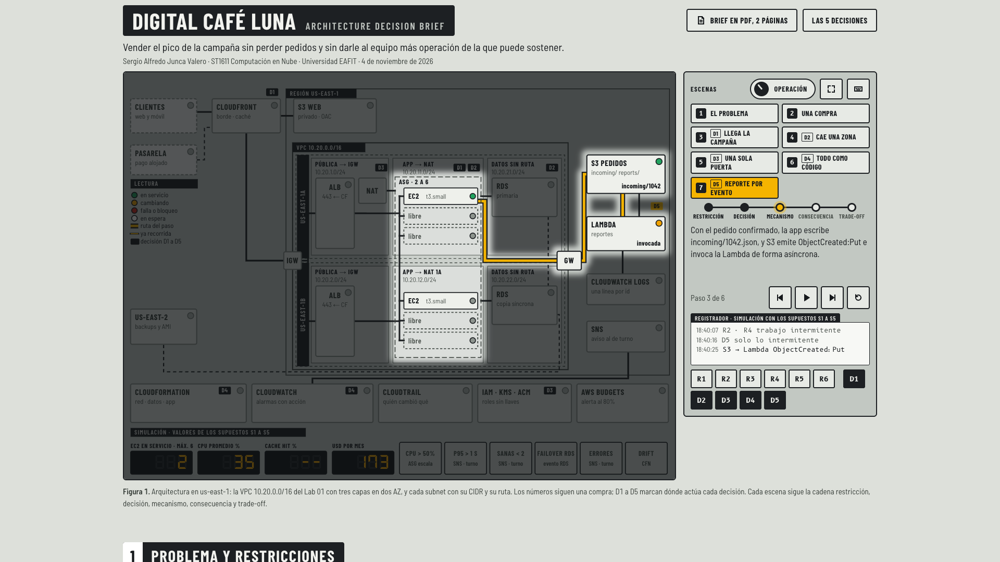</p>
<p>La aplicación escribe un archivo en incoming, y S3 invoca la
Lambda.</p>
</section>
<section id="d5-reporte-por-evento-paso-4-de-6" class="level3">
<h3>39 · D5 Reporte por evento · paso 4 de 6</h3>
<p><strong>Tiempo:</strong> 12 s</p>
<p><strong>Clic:</strong> <code>→</code> · consecuencia</p>
<p>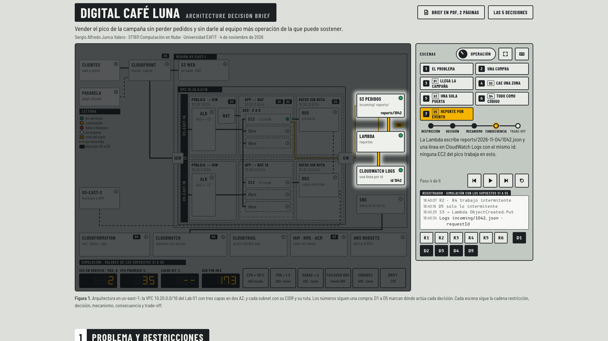</p>
<p>La Lambda escribe el reporte y un log con el mismo número de pedido.
Ninguna instancia del pico trabaja en esto, y cuesta menos de 1 dólar al
mes.</p>
</section>
<section id="d5-reporte-por-evento-paso-5-de-6" class="level3">
<h3>40 · D5 Reporte por evento · paso 5 de 6</h3>
<p><strong>Tiempo:</strong> 13 s</p>
<p><strong>Clic:</strong> <code>→</code> · trade-off</p>
<p>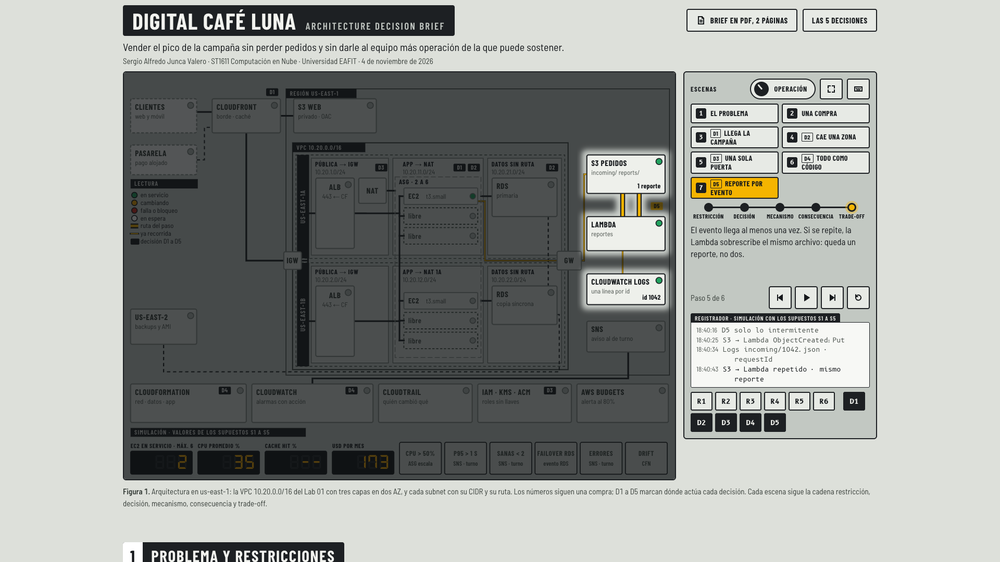</p>
<p>El trade-off: el evento puede llegar dos veces. Como escribo por
número de pedido, queda un solo reporte. Descarté un proceso en las EC2,
porque compite con la API en el pico.</p>
</section>
<section id="d5-reporte-por-evento-paso-6-de-6" class="level3">
<h3>41 · D5 Reporte por evento · paso 6 de 6</h3>
<p><strong>Tiempo:</strong> 17 s</p>
<p><strong>Clic:</strong> <code>→</code> · evidencia, riesgo y
prueba</p>
<p>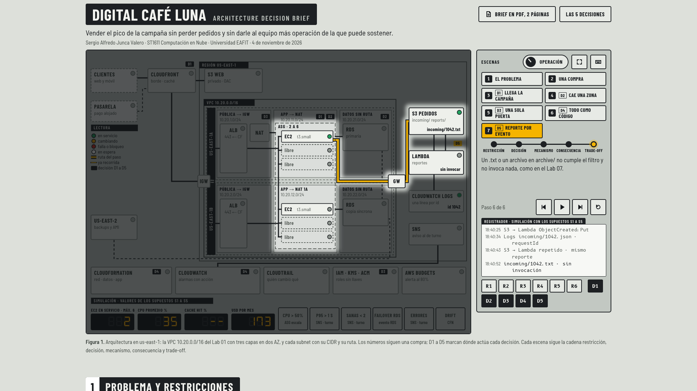</p>
<p>En el Lab 07, un archivo en incoming dio una invocación y un log. Un
.txt y archive no invocaron.</p>
<p>Riesgo: un evento que falla tras los reintentos. Avisa una alarma. Lo
demuestro subiendo dos veces el mismo pedido: un solo reporte.</p>
</section>
<section id="costo-y-evolución-sección-5" class="level3">
<h3>42 · Costo y evolución · sección 5</h3>
<p><strong>Tiempo:</strong> 38 s (43 s con lo opcional)</p>
<p><strong>Clic:</strong> <code>Esc</code> y bajo con la rueda hasta la
sección 5</p>
<p>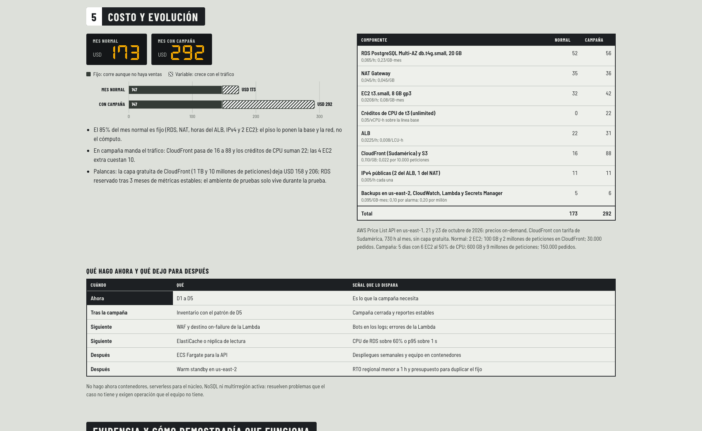</p>
<p>El costo sale de la API de precios de AWS, sin capa gratuita: 173
dólares en un mes normal y 292 con campaña.</p>
<p>El 85% es fijo, 147 dólares. El piso lo ponen la base y la red, no el
cómputo. En campaña manda el tráfico: CloudFront pasa de 16 a 88
dólares, y las 4 instancias extra cuestan solo 10.</p>
<p><span class="opc">La capa gratuita de CloudFront deja el mes en 158 y
206 dólares.</span></p>
<p>No hago ahora contenedores, varias regiones ni NoSQL: resuelven
problemas que el caso no tiene. Cada una tiene su señal. Por ejemplo,
réplica de lectura si la CPU de la base pasa de 60%.</p>
</section>
<section id="evidencia-y-cierre-sección-evidencia" class="level3">
<h3>43 · Evidencia y cierre · sección Evidencia</h3>
<p><strong>Tiempo:</strong> 54 s</p>
<p><strong>Clic:</strong> bajo con la rueda hasta Evidencia</p>
<p>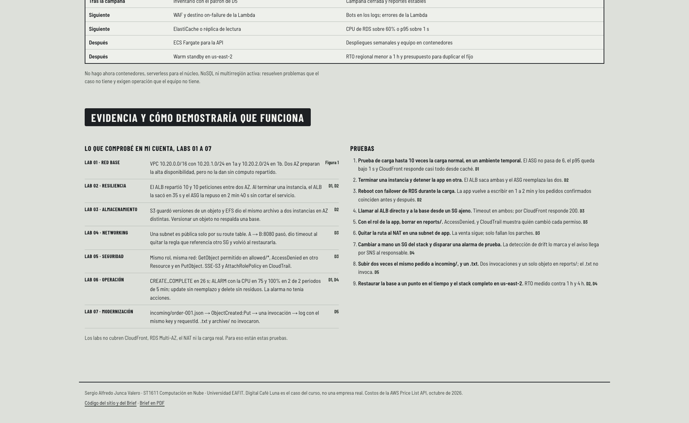</p>
<p>Qué está probado: balanceo, red, permisos, plantillas y eventos, en
los labs 01 a 07. CloudFront, Multi-AZ, el NAT y la carga real no los
cubren los labs. Por eso dejé 9 pruebas en el Brief, con el resultado
esperado.</p>
<p>El valor para Café Luna: vende en el pico sin pagarlo todo el año, no
pierde pedidos si cae una zona y un equipo pequeño lo opera.</p>
<p>Escogí cada servicio por la restricción que resuelve, sabiendo qué
sacrifico y cuánto cuesta. Gracias, profe.</p>
</section>
</section>
<section id="tiempo-total" class="level2">
<h2>Tiempo total</h2>
<p><strong>Sin lo opcional:</strong> 513 s (8:33)</p>
<p><strong>Con lo opcional:</strong> 526 s (8:46), dentro de los 600
s</p>
<p><strong>Tiempo asignado:</strong> 600 s (10 minutos)</p>
</section>
<section id="parte-2-las-2-preguntas" class="level2">
<h2>Parte 2: las 2 preguntas</h2>
<p>Respondo en 30 a 45 segundos y sigo la cadena. Termino con una cifra,
un lab o una prueba, y señalo la pieza en el tablero.</p>
<section id="las-7-preguntas-de-la-lámina-del-28-de-octubre"
class="level3">
<h3>Las 7 preguntas de la lámina del 28 de octubre</h3>
<p>El profe dijo que quien las responda sobre su diagrama tiene una base
sólida.</p>
<p><strong>¿Qué se comunica con qué?</strong> El cliente solo habla con
CloudFront. CloudFront lee la web del bucket privado y manda la API al
balanceador por HTTPS. El balanceador habla con las instancias. Las
instancias hablan con la base por el puerto 5432 y con S3 por el gateway
endpoint. S3 invoca la Lambda. La pasarela entra por CloudFront con un
webhook firmado. La única salida a Internet es el NAT, para parches y
Session Manager. <em>Muestro: <code>2</code>, <code>Espacio</code> y
<code>→</code>.</em></p>
<p><strong>¿Quién tiene permiso?</strong> Nadie usa llaves guardadas:
cada pieza tiene un rol de IAM mínimo. Las instancias entran a la base
con un token de IAM y escriben en incoming, pero no borran reportes. La
Lambda lee incoming y escribe en reports. S3 solo puede invocar esa
Lambda. CloudTrail registra quién cambió qué. <em>Respaldo: Lab 05,
AccessDenied. Muestro: <code>5</code>.</em></p>
<p><strong>¿Dónde vive el estado?</strong> Fuera de las instancias.
Pedidos, clientes y carrito en RDS, con copia síncrona en la otra zona y
backups de 7 días copiados a us-east-2. La sesión en una cookie firmada.
Los archivos en S3. La aplicación en la AMI. Por eso destruyo una
instancia sin perder nada. <em>Respaldo: Lab 02. Muestro:
<code>4</code>.</em></p>
<p><strong>¿Qué observamos?</strong> Lo que siente el cliente y lo que
paga el negocio: p95, errores 5XX, instancias sanas, CPU y conexiones de
la base, errores de la Lambda y gasto contra presupuesto. La CPU escala
sola. Lo demás avisa por SNS. Sigo el ciclo de la clase: señal,
hipótesis, evidencia, acción y aprendizaje. <em>Muestro: <code>6</code>
y los indicadores de abajo.</em></p>
<p><strong>¿Qué repetimos?</strong> La infraestructura, con 3 plantillas
de CloudFormation que dan el mismo resultado cada vez. Con ellas levanto
y borro el ambiente de la prueba de carga, y en un desastre despliego en
us-east-2. Cada cambio pasa por un change set. <em>Respaldo: Lab 06,
CREATE_COMPLETE en 26 s, update sin reemplazo y delete sin
residuos.</em></p>
<p><strong>¿Qué modelo de ejecución conviene?</strong> Depende de cómo
trabaja cada parte. La API es continua y ya corre en Linux: máquinas
virtuales con Auto Scaling, sin rediseñar antes de la campaña. La base
en un servicio administrado, porque el equipo no puede operar réplicas.
Los reportes son intermitentes: Lambda. Lo estático en S3 y CloudFront.
Lo administrado me quita operación, no responsabilidad. <em>Muestro:
<code>7</code>.</em></p>
<p><strong>¿Qué cuesta, qué riesgo acepto, qué trade-off?</strong> 173
dólares en un mes normal y 292 con campaña, 85% fijo. Acepto un pico
mayor que mi supuesto, la base como cuello de botella y una sola región,
con 4 horas para volver si cae. Pago a propósito 26 dólares por la base
en dos zonas. Decidí no pagar 37 por otro NAT ni 61 por 6 instancias
fijas. <em>Muestro: lámina 42.</em></p>
</section>
<section id="las-10-más-probables" class="level3">
<h3>Las 10 más probables</h3>
<p><strong>1. ¿Lo probaste?</strong> En parte, y lo digo así. Balanceo,
reemplazo de instancias, red, permisos, plantillas, alarmas y el evento
de S3 a Lambda, en mi cuenta, labs 01 a 07. CloudFront, Multi-AZ, el NAT
y la carga real no. Para eso dejé 9 pruebas con su resultado esperado.
<em>Respaldo: lámina 43.</em></p>
<p><strong>2. ¿Y si el pico supera las 6 instancias?</strong> La API se
degrada, pero lo estático sigue en CloudFront. La alarma de p95 con el
grupo en 6 me avisa. Subir el máximo es un update del stack, si el
presupuesto lo permite. El techo es mi límite de costo a propósito.
<em>Respaldo: 61 dólares más al mes por 6 fijas.</em></p>
<p><strong>3. ¿Cómo sabes que 6 instancias alcanzan?</strong> Todavía no
lo sé: es un supuesto. Lo valido con la prueba de carga a 10 veces lo
normal. Si el p95 pasa de 1 segundo, subo el techo con presupuesto
aprobado o guardo más catálogo en caché. <em>Respaldo: prueba
1.</em></p>
<p><strong>4. ¿Por qué no Kubernetes o contenedores?</strong> No
resuelve ninguna restricción del caso y le suma operación a un equipo
pequeño. El pico lo absorben CloudFront y el grupo, y supuse un equipo
que domina Linux y SQL. Lo consideraría, empezando por ECS Fargate, con
despliegues semanales y un equipo que sepa contenedores. <em>Respaldo:
supuesto S4 y tabla de evolución.</em></p>
<p><strong>5. ¿Por qué un balanceador solo no recupera
capacidad?</strong> Solo decide a quién manda tráfico: deja de enviarle
a la instancia enferma, pero no crea otra. El que repone es el grupo de
Auto Scaling. <em>Respaldo: Lab 02, 35 segundos y 2 minutos 40.</em></p>
<p><strong>6. ¿Por qué un solo NAT si la resiliencia pesa más que el
costo?</strong> Porque vender no depende de él. La aplicación viene en
la AMI, S3 va por el gateway endpoint y el pago entra como webhook. Si
la pasarela exigiera llamadas salientes, pondría uno por zona.
<em>Respaldo: 37 dólares al mes, supuesto S3, prueba 6.</em></p>
<p><strong>7. ¿Por qué RDS y no DynamoDB o PostgreSQL en EC2?</strong>
Los pedidos son relacionales, necesitan transacciones y el equipo sabe
SQL. En EC2 operaría réplica, backups y parches. DynamoDB obliga a
remodelar los datos antes de la campaña. <em>Respaldo: D2, 52 dólares al
mes.</em></p>
<p><strong>8. ¿Qué pasa si cae toda la región?</strong> Restauro backups
y plantillas en us-east-2: RTO de 4 horas y RPO de 1 hora. Bajarlo a
minutos pide un warm standby, que casi duplica el costo fijo. Lo haría
si el negocio pide menos de 1 hora. <em>Respaldo: tabla de resiliencia,
prueba 9.</em></p>
<p><strong>9. ¿Qué hace la Lambda si llega el mismo evento dos
veces?</strong> Reescribe el mismo archivo, porque el nombre es el
número del pedido. Queda un reporte. Si falla tras los reintentos, la
alarma avisa y reproceso desde incoming. El pedido está a salvo en la
base. <em>Respaldo: Lab 07, prueba 8.</em></p>
<p><strong>10. ¿Por qué el 85% es fijo y qué es lo más caro?</strong>
Base, NAT, balanceador e IP públicas se cobran por hora, haya ventas o
no. Es el precio de no perder pedidos y tener una sola puerta. Lo más
caro: la base, 52, y el NAT, 35. En campaña, CloudFront, 88.
<em>Respaldo: tabla de la lámina 42.</em></p>
<p>El resto de las preguntas, los números y cada pieza del diagrama
están en <code>../guion.html</code>.</p>
</section>
</section>
<section id="parte-3-si-trae-una-restricción-nueva" class="level2">
<h2>Parte 3: si trae una restricción nueva</h2>
<p>Es la misma para todos, no exige tecnologías fuera del curso y el
Brief no cambia. Respondo de palabra y la marco en el tablero con la
tecla <code>A</code>.</p>
<p><strong>La fórmula:</strong> “Mantengo ___ porque ___. Cambio ___ por
___ porque ___. Gano ___ y sacrifico ___. El riesgo nuevo es ___, y lo
valido con ___.”</p>
<p><strong>1. El presupuesto se reduce a la mitad, unos 90 dólares al
mes.</strong> El costo sube en la prioridad. Mantengo CloudFront, el
grupo con techo, la Lambda y CloudFormation. Paso la base a una sola
zona, con restauración a un punto, y ahorro 26 dólares. Quito el NAT y
ahorro unos 37: los parches llegan con una AMI nueva y un instance
refresh, el operador entra por EC2 Instance Connect Endpoint y los logs
de la aplicación van a S3 por el gateway endpoint. Con la capa gratuita
de CloudFront el mes queda en unos 95 dólares, cerca de la meta.
Sacrifico el RPO 0 si cae una zona: la base se restaura en una hora y
puedo perder hasta 5 minutos de pedidos. Lo valido con un ensayo de
restauración y una alerta de AWS Budgets al 80%. En el tablero marco la
base para cambiar y el NAT para quitar.</p>
<p><strong>2. Los datos personales no pueden salir de Colombia.</strong>
Toca los datos, que son lo primero. AWS no tiene región en Colombia, así
que separo: los datos personales quedan en el país, en un centro de
datos propio o de un proveedor local, y en AWS solo viajan tokens o el
id del cliente. La aplicación consulta el dato personal por VPN cuando
lo necesita. Es una nube híbrida: gano cumplimiento, pero sumo latencia
y un sitio más que operar, y eso choca con el equipo pequeño. Antes
confirmaría si lo exige la ley o un contrato, porque la Ley 1581 permite
transferir datos a países con un nivel adecuado de protección. Lo valido
midiendo la latencia de la VPN en la prueba de carga.</p>
<p><strong>3. El pico es 10 veces mayor que el supuesto.</strong> Toca
la demanda y vuelve la base el cuello de botella. Subo el techo del
grupo con presupuesto aprobado, guardo en la caché de CloudFront las
consultas de catálogo de la API, que son de solo lectura, con un tiempo
de vida corto, agrego ElastiCache o una réplica de lectura y subo la
clase de la base la víspera. Ese cambio de clase es un failover de 1 a 2
minutos, así que lo hago antes de la campaña y no durante. Sacrifico
costo variable y frescura del catálogo. Lo valido con una prueba de
carga al nuevo pico, mirando el p95, la CPU y las conexiones de la
base.</p>
<p><strong>4. Disponibilidad de 99,99% o recuperar la región en
minutos.</strong> Toca la resiliencia. Paso de backup y restauración a
un warm standby en us-east-2: una réplica de lectura de la base entre
regiones, un grupo mínimo y un balanceador allá, y el cambio de origen
en CloudFront o en Route 53. La recuperación baja a minutos y la pérdida
de datos a segundos, porque esa réplica es asíncrona. A cambio, el costo
fijo casi se duplica y hay más piezas que operar. Lo valido con un
ensayo de failover regional que mida el RTO y el RPO reales.</p>
<p><strong>5. El equipo se reduce a una persona.</strong> El límite del
equipo se vuelve más duro. Mantengo todo administrado, porque el grupo,
el balanceador y el failover de la base ya se recuperan solos. Quito
piezas, como el NAT, dejo cada alarma con una acción automática o un
procedimiento de una página, y las plantillas documentan la
arquitectura. El riesgo es que todo el conocimiento quede en una sola
persona y la guardia pese mucho. Lo valido con un simulacro en el que
esa persona sigue el procedimiento sola.</p>
<p><strong>6. Cifrado con llaves propias o auditoría estricta.</strong>
Toca los datos. Uso KMS con una llave administrada por el cliente en S3
y en la base, que cuesta 1 dólar al mes por llave. En RDS el cifrado se
define al crear la base, así que hago un snapshot, lo copio con la llave
nueva y restauro, con una ventana de corte. Sumo los data events de
CloudTrail en los buckets con datos de clientes y el registro de
sesiones de Session Manager. El riesgo nuevo es perder acceso a la
llave, que equivale a perder los datos. Lo valido intentando leer con un
rol que no tiene permiso sobre la llave.</p>
<p><strong>7. La pasarela exige llamadas salientes.</strong> Ahora
vender depende de la salida a Internet, así que pongo un NAT por zona,
37 dólares más al mes, para que la caída de una zona no corte los pagos.
Es justo el supuesto 3 del Brief. Lo valido quitando la ruta al NAT de
una zona: los pagos tienen que seguir por la otra.</p>
<p><strong>8. El inventario de las tiendas entra ya.</strong> Toca la
evolución. Uso el mismo patrón de la quinta decisión: cada tienda sube
su archivo de stock a incoming/inventario/, una Lambda actualiza la base
y la web lee de ahí. El riesgo es vender algo agotado por el desfase
entre la tienda y la web; lo reduzco reservando el stock al confirmar y
con una conciliación diaria. Lo valido subiendo dos veces el mismo
archivo, para ver que no duplica, y uno con error, para ver que salta la
alarma.</p>
<p><strong>9. Las tiendas tienen Internet satelital o
intermitente.</strong> El profe usó este ejemplo en clase. La venta en
línea no cambia, porque el cliente compra desde su propia conexión a
través de CloudFront. Lo que cambia es lo que sale de las tiendas: el
archivo de inventario se sube por lotes cuando hay enlace, con
reintentos y subida por partes a S3. Como el proceso por evento ya es
idempotente, un archivo repetido no duplica nada. Sacrifico frescura del
inventario. Lo valido cortando el enlace de una tienda en una prueba y
revisando que, al volver, sincronice sin duplicados.</p>
<p><strong>10. No depender de servicios propietarios.</strong> Mantengo
lo que ya es portable: PostgreSQL, Linux y HTTP. Cambio CloudFormation
por Terraform, con el estado en S3 y bloqueo, y los reportes pasan a un
proceso en contenedor o en la máquina virtual. Sacrifico operación,
porque el equipo administra más piezas. Lo valido levantando todo con
Terraform en un ambiente temporal.</p>
<p><strong>11. Bots o ataque de denegación durante la campaña.</strong>
CloudFront ya trae Shield Standard. Agrego AWS WAF en CloudFront con
reglas por tasa de peticiones y control de bots, unos 5 dólares al mes
más las reglas. El riesgo es bloquear clientes reales por error. Lo
valido con tráfico sintético que pase el límite y revisando qué
bloqueó.</p>
<p><strong>12. Un cliente pide que borren sus datos (Ley 1581).</strong>
Borro su registro en la base. Los backups lo purgan cuando vencen los 7
días. En S3 los reportes se guardan por número de pedido, y los logs no
llevan datos personales. El riesgo es que un dato personal se cuele en
un log. Lo valido buscando el id del cliente en logs y buckets después
del borrado.</p>
</section>
<section id="cómo-me-preparo" class="level2">
<h2>Cómo me preparo</h2>
<p>La ruta de apoyo es <a
href="https://sjunka.github.io/digital-cafe-luna/demos/"
class="uri">https://sjunka.github.io/digital-cafe-luna/demos/</a>: cada
decisión en 20 segundos, con sus preguntas frecuentes.</p>
<p><strong>Lunes 2 de noviembre: entender.</strong></p>
<ol type="1">
<li>Veo cada demo y repito su cadena sin mirar: <a
href="https://sjunka.github.io/digital-cafe-luna/demos/#D1">D1</a>, <a
href="https://sjunka.github.io/digital-cafe-luna/demos/#D2">D2</a>, <a
href="https://sjunka.github.io/digital-cafe-luna/demos/#D3">D3</a>, <a
href="https://sjunka.github.io/digital-cafe-luna/demos/#D4">D4</a>, <a
href="https://sjunka.github.io/digital-cafe-luna/demos/#D5">D5</a>.</li>
<li>Dibujo la arquitectura de memoria siguiendo una compra.</li>
<li>Respondo en voz alta las 7 preguntas de la lámina.</li>
</ol>
<p><strong>Martes 3 de noviembre: ensayar.</strong></p>
<ol type="1">
<li>Digo los 10 minutos con el reloj del tablero. Repito hasta quedar
bajo 9 minutos 45.</li>
<li>Repaso las cifras sin mirar: 173 y 292, 147 fijo, 26, 37, 61, 1 a 2
minutos, 4 horas, 35 segundos y 2 minutos 40.</li>
<li>Ensayo 2 restricciones con la tecla <code>A</code>: presupuesto a la
mitad y pico 10 veces mayor.</li>
</ol>
<p><strong>Miércoles 4 de noviembre: repasar.</strong></p>
<ol type="1">
<li>Hago una pasada completa con el tablero y pido a alguien 2 preguntas
al azar.</li>
<li>Pruebo cámara y micrófono. Si el sitio no carga, abro
<code>web/dist/index.html</code> en local.</li>
</ol>
</section>
</main>
